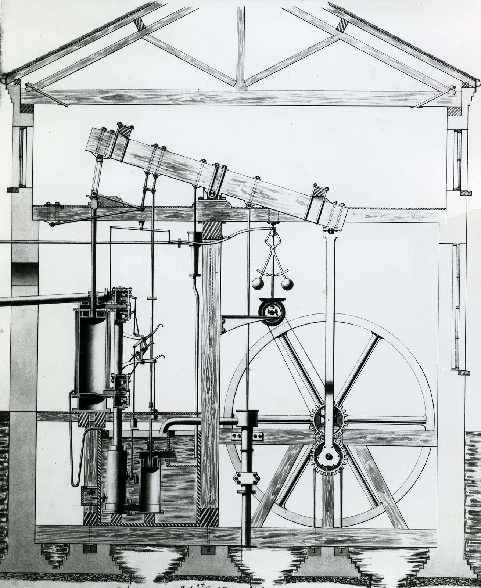

Origins of Steam Engines

Steam engines were developed during the 18th century to solve problems in mining and industry. Early engines were used to pump water out of mines, helping workers reach deeper underground resources.
One of the first successful steam engines was built by Thomas Newcomen in 1712. His design used steam power to operate a pump and became widely used in mines across Britain.
In the 1760s, James Watt improved the steam engine by adding a separate condenser. This made engines much more efficient because they used less fuel and produced more power.
Watt worked with businessman Matthew Boulton and a team of engineers and skilled workers to manufacture and improve steam engines. Their partnership helped spread steam power throughout mines, factories, and mills.
The success of steam engines played a major role in the Industrial Revolution. They provided reliable power for machinery and later helped power ships and railways, transforming transportation and industry around the world.
Timeline
1712: Thomas Newcomen builds the first practical steam engine.
1765: James Watt develops improvements to increase efficiency.
1775: Watt and Boulton begin working together.
1804: Early steam locomotives begin to appear.